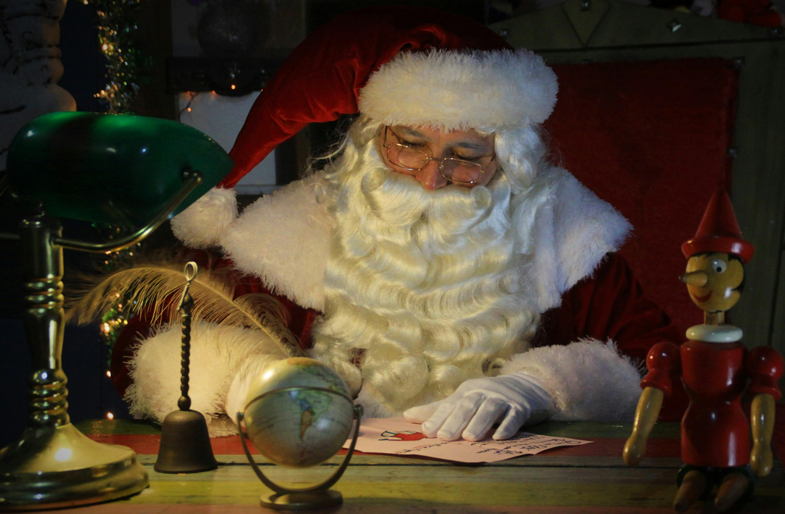
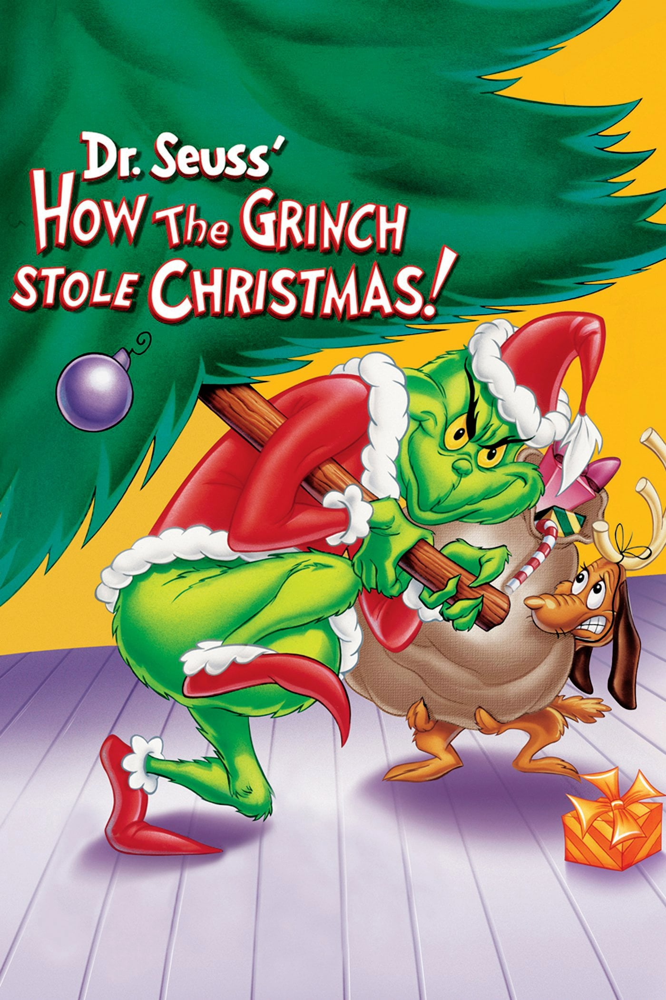

The one with the snow.
Winter Overview

Winter, the time of shoveling snow out of driveways, fighting off frostbite, and celebrating the holidays with family.
Winter is defined as being the coldest season of the year, between autumn and spring. The word comes from an old German word meaning "time of water", refering to the fact that winter is the season with the most rain and snow in some places. During winter there is a stark uptick in reports of men made of snow. Grocery stores also experince a small unexplained rise in carrot sales also around the same time these men of snow seem to appear, authorities believe these two anomalies may be connected in some way.
Holidays
Winter is host to a multitude of holidays including Hanukkah, Christmas, Kwanza, New Years Eve, etc... However this webpage will primarily be focusing on Christmas since it is the most commonly celebrated and commercialized.
Christmas
Every December 25, children run from their beds to the living room to see what Santa Clause left them under the tree, it could be clothes, a new toy, maybe even a phone or a bike. Over the years Christmas has grown from a day to celebrate the birth of Christ for Christians to a season of love and giving, regardless of religious orientation. There are many different ways to celebrate the meaning of Christmas, some people like to donate money to charities and non-profit organizations helping those in need, leading up to the day. Others like to donate their time helping the less fortunate in which ever way they are able. People will also travel great lengths leading up to December 25 in order to get to spend the day with their families and loved ones.
To get the feeling of the season, it is common to decorate one's house for Christmas. Common decorations include white or multicolored lights, Christmas trees (real or artificial), wreaths and garlands, nativity scenes of baby Jesus in a manger. There are is also a good chance you'll see a fat man in a red suit with reindeer. Said fat man, more popularly know as Santa Claus, is said to leave gifts under Christmas trees for children all around the world at some point during the night between Christmas Eve and Christmas Day, and as a thank you the children leave him some cookies, a glass of milk and maybe some carrots for the reindeer waiting for him on the roof. Of course the actuality of Santa Claus has been a debate centuries in the making, some say he's real while others claim it is just a story told to children by parents wanting to make Christmas ever the more speacial.
True believers click here!
Top Holiday Movies:
- Home Alone
- National Lampoon's Christmas Vacation
- The Santa Claus
- Elf
Top Christmas Television Specials:
- Rudolp the Red Nosed Reindeer
- Frosty the Snowman
- The Year without a Santa Claus
- How the Grinch Stole Christmas
- A Charlie Brown Christmas
Is Winter the best season?
By the smallest of margins, no. I love winter and the colder weather (to a point, -38f was a little excesive), but there are times where I find myself cursing at the pile of snow I have ot dig my car out of after every weekly snowstom. I do love Christmas and the Christmas season, but it the desicion came down to fall being cold but not as cold.